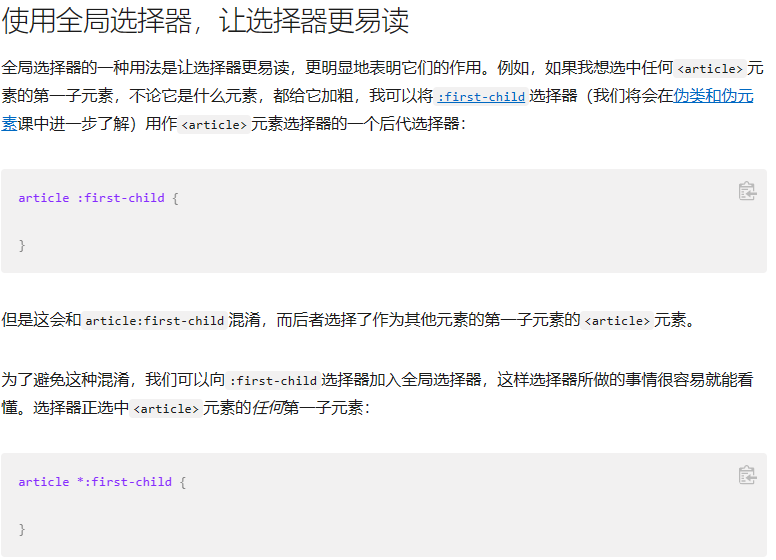
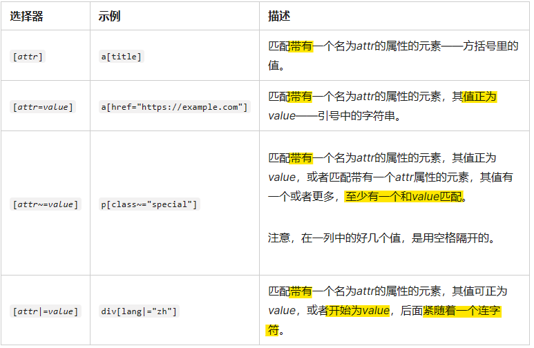
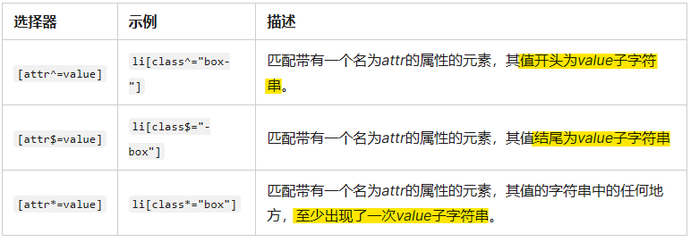
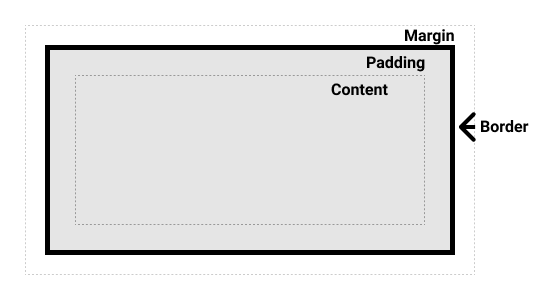

02 CSS 构建基础
2 CSS 构建基础
2.1 CSS 选择器
- 选择器列表
- 选择器种类
- 类型、类和 ID 选择器
- 标签属性选择器
- 伪类与伪元素
- 运算符
2.1.1 类型、类和 ID 选择器
类型选择器
- 类型选择器有时也叫做 “标签名选择器*” 或者是 ”元素选择器“
- 文档中选择了一个 HTML 标签/元素
全局选择器
- 全局选择器，是由一个星号（
*）代指的 - 它选中了文档中的所有内容（或者是父元素中的所有内容，比如，它紧随在其他元素以及邻代运算符之后的时候）
- 全局选择器的一种用法是让选择器更易读，更明显地表明它们的作用

类选择器
- 选择文档中应用了这个类的所有物件
- 指向特定元素的类
span.highlight - 多个类被应用的时候指向一个元素
.notebox.warning
ID 选择器
- ID 选择器开头为
#
2.1.2 属性选择器
- 选中带有特定属性的元素
存否和值选择器
- 允许基于一个元素自身是否存在（例如
href）或者基于各式不同的按属性值的匹配，来选取元素 
- 【注意】
[attribute|=value]选择器用于选取属性值以指定值开头的元素。注释：该值必须是整个单词，比如 lang="en"，或者后面跟着连字符，比如 lang="en-us"。
子字符串匹配选择器

大小写敏感
- 如果你想在大小写 不敏感
的情况下，匹配属性值的话，你可以在闭合括号之前，使用
i值。这个标记告诉浏览器，要以大小写不敏感的方式匹配 ASCII 字符 li[class^="a" i]
2.1.3 伪类和伪元素
伪类
- 伪类是选择器的一种，它用于选择 处于特定状态 的元素
- 伪类就是开头为冒号的关键字：
:pseudo-class-name
简单伪类
:first-child选择第一个子元素article p:first-child，<article>第一个<p>
:last-child:only-child:invalid
用户行为伪类（动态伪类）
- 在用户以某种方式和文档交互的时候应用
:hover指针悬停时激活:focus当用户点击或触摸元素或通过键盘的“tab”键选择它时会被触发
伪元素
- 表现得是像你往标记文本中加入全新的 HTML 元素一样
- 伪元素开头为双冒号
:: ::first-line即使单词/字符的数目改变，它也只会选中第一行
结合伪类和伪元素
1 | |
::before 和
::after
- 和 content 属性一同使用，使用 CSS 将内容插入到你的文档中中
- 插入一个文本字符串
- 插入一个图标
- 插入空字符串，其后可以像页面上的其他元素被样式化
2.1.4 关系选择器
后代选择器
- 用单个空格（" "）字符组合两个选择器
body article p
子代关系选择器 >
- 只会在选择器选中 直接子元素 的时候匹配，继承关系上更远的后代则不会匹配
邻接兄弟 +
- 选中恰好处于另一个在继承关系上 同级 的元素 旁边 的物件
通用兄弟 ~
- 选中一个元素的兄弟元素，即使它们不直接相邻
2.2 层叠、优先级和继承
2.2.1 冲突规则
- 样式表层叠：当应用两条同级别的规则到一个元素的时候，写在 后面 的就是实际使用的规则
- 优先级：浏览器是根据优先级来决定当多个规则有不同选择器对应相同的元素的时候需要使用哪个规则
- 继承：一些设置在父元素上的 CSS 属性是可以被子元素继承的，有些则不能
2.2.2 理解继承
控制继承
- CSS 为控制继承提供了五个特殊的通用属性值。每个 CSS
属性都接收这些值。
inherit设置该属性会使子元素属性和父元素相同。实际上，就是“开启继承”。==【继承父类】==initial将应用于选定元素的属性值设置为该属性的初始值==【继承浏览器】==revert将应用于选定元素的属性值重置为浏览器的默认样式，而不是应用于该属性的默认值，类似unsetrevert-layer将应用于选定元素的属性值重置为在上一个层叠层中建立的值unset将属性重置为自然值，也就是如果属性是自然继承那么就是inherit，否则和initial一样
重设所有属性值
all属性可以同时将继承值应用于所有属性
2.2.3 理解层叠
- 层叠的三个因素（后面的更重要）
- 资源顺序
- 优先级
- 重要程度
资源顺序
- 在相同优先级时，后面的规则覆盖前面的规则
优先级
- 范围更小的，优先级更高
- 常见做法：给基本元素定义通用样式，给不同元素创建对应的类
- 【优先级计算】：权重和
- ID：100【==ID== 选择器】
- 类：10【==类==选择器、==属性==选择器或者==伪类==】
- 元素：1【==元素==、==伪元素==选择器】
- 通用选择器
*、组合符（+、>、~、' '）和调整优先级的选择器（:where()）不会影响优先级 - 否定（
:not()）和任意匹配（:is()）伪类本身对优先级没有影响，但它们的参数则会带来影响。参数中，对优先级算法有贡献的参数的优先级的 最大值 将作为该伪类选择器的优先级。 - 评估优先级的最佳方法是对不同的优先级等级单独进行评分，并从最高的等级开始，必要时再计算低优先级等级的权重
内联样式
- 内联样式，即
style属性内的样式声明，优先于所有普通的样式，无论其优先级如何 - 相当于 1-0-0-0
!important
- 不建议使用
- 覆盖普通规则的层叠
- 覆盖
!important唯一的办法就是另一个!important具有相同_优先级_而且顺序靠后，或者更高优先级
2.2.4 CSS 位置的影响
- 相互冲突的声明将按以下顺序应用，后一种声明将覆盖前一种声明：
- 用户代理样式表中的声明（例如，浏览器的默认样式，在没有设置其他样式时使用）。
- 用户样式表中的常规声明（由用户设置的自定义样式）。
- 作者样式表中的常规声明（这些是我们 web 开发人员设置的样式）。
- 作者样式表中的
!important声明 - 用户样式表中的
!important声明 - 用户代理样式表中的
!important声明
2.2.5 级联层的顺序
- 在级联层中声明 CSS 是，优先级的顺序由声明层的顺序来决定。在任何层之外声明的 CSS 样式会被按声明的顺序组合在一起，形成一个未命名的层，它会被当作最后声明的层
- 对于存在冲突的常规（没有
!important声明）样式，后面的层比先前定义的层的优先级高。但对于带有!important标记的样式，其顺序相反——先前的层中的 important 样式比后面的层以及为在层中声明的 important 样式优先级要高 - 但内联样式比所有作者定义的样式的优先级都要高，不受级联层规则的影响
2.3 盒模型
2.3.1 块级盒子和内联盒子
- 块级盒子 (block box)
- 盒子会在内联的方向上扩展并占据父容器在该方向上的所有可用空间，在绝大数情况下意味着==盒子会和父容器一样宽==
- 每个盒子都会==换行==
width和height属性可以发挥作用- 内边距（padding）, 外边距（margin）和 边框（border）会将其他元素从当前盒子周围“推开”
- 内联盒子 (inline box)
- 盒子不会产生换行
width和height属性将不起作用。- ==垂直方向==的内边距、外边距以及边框会被应用但是不会把其他处于
inline状态的盒子推开。 - ==水平方向==的内边距、外边距以及边框会被应用且会把其他处于
inline状态的盒子推开。
- 用做链接的
<a>元素、<span>、<em>以及<strong>都是默认处于inline状态的 - 我们通过对盒子
display属性的设置，比如inline或者block，来控制盒子的 外部显示类型
2.3.2 内部和外部显示类型
- 外部显示类型：盒子是 block 还是 inline
- 内部显示类型：盒子内部如何布局
- 默认：按照 正常文档流 布局
flex：弹性盒子规则布局grid：网格布局
2.3.3 CSS 盒模型
盒模型的组成
- Content box:
这个区域是用来显示内容，大小可以通过设置
width和height. - Padding box:
包围在内容区域外部的空白区域；大小通过
padding相关属性设置。 - Border box:
边框盒包裹内容和内边距。大小通过
border相关属性设置。 - Margin box:
这是最外面的区域，是盒子和其他元素之间的空白区域。大小通过
margin相关属性设置。

标准盒模型 & 替代盒模型
- 标准盒模型：padding 和 border 再加上设置的宽高一起决定整个盒子的大小
- 替代 (IE)
盒模型：所有宽度都是可见宽度，所以内容宽度是该宽度减去边框和填充部分
1
2
3html {
box-sizing: border-box;
} - margin 不计入实际大小 —— 当然，它会影响盒子在页面所占空间，但是影响的是盒子外部空间
2.3.4 margin, padding and border
margin 外边距
- 盒子外部空间，将其他元素推开，设置负值会导致和其他内容重叠
- margin 折叠
如果两个外边距相接，这两个外边距将合并成最大的单个外边距的大小
- 外边距折叠需要遵循规则
border 边框
- 如果您正在使用标准的盒模型，边框的大小将添加到框的宽度和高度。如果您使用的是替代盒模型，那么边框的大小会使内容框更小，因为它会占用一些可用的宽度和高度。
- 边框的属性包括：宽度、样式和颜色
padding 内边距
- padding 不能为负数
- 用于将内容推离边框
2.3.5 内联盒子的盒子模型
- 以
<span>为例，它是 inline box，因此- 宽度、高度设置无效
- 外边距、内边距和边框生效，但不改变其他内容与内联盒子的关系
2.3.6
display: inline-block;
- 作用：不导致其他元素换行，但设定宽度和高度，可以避免和其他内容重叠
2.4 背景和边框
2.4.1 背景
1 | |
背景颜色
background-color
- 接受所有有效的
<color>值 - 扩展到边框内
背景图片
background-image
- 图像太大：不缩小，显示一个角落
- 图像太小：平铺以填充方框
- 如果同时制定了背景颜色和图片：图像显示在颜色上层
控制背景图像平铺
background-repeat
no-repeat— 不重复。repeat-x—水平重复。repeat-y—垂直重复。repeat— 在两个方向重复。
调整背景图像的大小
background-size
- 设置长度或百分比
- 设置
cover：在保持宽高比同时完全覆盖盒子 - 设置
contain：将使图像的大小适合盒子内
背景图像定位
background-position
background-position-x、background-position-y- 以框的左上角为原点
- 可以使用关键字，如
top、right - 使用长度值、百分比
- 混合使用关键字、长度值以及百分比
- 4-value 语法
background-position: top 20px right 10px;
渐变背景
background-image属性，填入值为 CSS 渐变生成器1
2
3.a {
background-image: linear-gradient(105deg, rgba(0,249,255,1) 39%, rgba(51,56,57,1) 96%);
}
多个背景图像
- 在单个属性值中指定多个
background-image值，用逗号分隔每个值 - 背景将与最后列出的背景图像层在堆栈的底部，背景图像在代码列表中最先出现的在顶端【先写的在上面的图层】
- 指定多个背景图像时，其他
background-属性也要分别指定，用逗号分隔- 如果写的值少于图像数量，将循环赋值
背景滚动
background-attachment
scroll: 使元素的背景在页面滚动时滚动。如果滚动了元素内容，则背景不会移动。实际上，背景被固定在页面的相同位置，所以它会随着页面的滚动而滚动。fixed: 使元素的背景固定在视图端口上，这样当页面或元素内容滚动时，它就不会滚动。它将始终保持在屏幕上相同的位置。local: 这个值是后来添加的 (它只在 Internet Explorer 9+中受支持，而其他的在 IE4+中受支持)，因为滚动值相当混乱，在很多情况下并不能真正实现您想要的功能。局部值将背景固定在设置的元素上，因此当您滚动元素时，背景也随之滚动。
使用 background
简写属性
- 如果使用多个背景，则需要为第一个背景指定所有普通属性，然后在逗号后面添加下一个背景
background-color只能在逗号之后指定background-size值只能包含在背景位置之后，用'/'字符分隔，例如：center/80%
2.4.2 边框
1 | |
圆角 border-radius
2.5 处理不同方向的文本【暂时跳过】
2.5.1 书写模式
writing-mode
horizontal-tb: 块流向从上至下。对应的文本方向是横向的。vertical-rl: 块流向从右向左。对应的文本方向是纵向的。vertical-lr: 块流向从左向右。对应的文本方向是纵向的。
2.5.2 书写模式对布局的影响
2.6 溢出
2.6.1 CSS 对溢出的处理
- 只要有可能，CSS 就不会隐藏你的内容，隐藏引起的数据损失通常会造成困扰
- 如果你已经用
width或者height限制住了一个盒子，CSS 假定，你知道你在做什么，而且你已经控制住了溢出的隐患
2.6.2 手动处理溢出
overflow
visible【默认】hidden隐藏溢出scroll溢出时滚动（两个方向都有）- 只在 y 轴滚动：
overflow-y: scroll
- 只在 y 轴滚动：
auto只在溢出时出现滚动条
2.6.3 溢出建立了块级排版上下文
2.7 CSS 值和单位
相对长度单位

- 百分比：父元素的百分比

{kind=link}